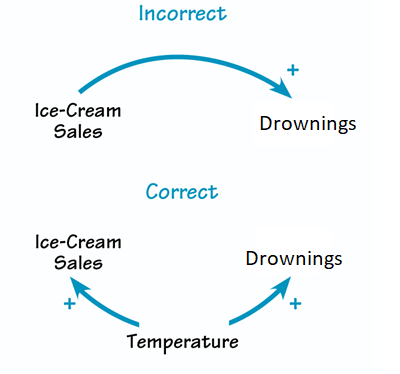

Causation: any change in the value of one variable will cause a change in the value of another variable, which means one variable makes the other happen.
Correlation does not mean causality!!

Multiple Regression Modeling
Multiple regression is the procedure that helps us disentangle issues with confounding (lurking) variables. That is, a procedure that will help sort out collinearity issues.
Simpson’s paradox: a trend appears in several groups of data but the trend disappears or reverses when groups are combined.
Model: In multiple linear regression, the significance of each term in the model depends on the other terms in the model.
Example: model
Predict body mass based on both flipper length and bill length.
model_penguins <-lm(body_mass_g ~ flipper_length_mm + bill_length_mm, data = penguins)summary(model_penguins)$coefficients
\(b_0\) intercept; the predicted/expected body mass when a penguin has flipper length 0 and bill length 0
\(b_1\) slope of flipper length; taking into account all other explanatory variables, for every 1 mm increase in flipper length, the expected body mass increases by \(48.14\)
\(b_2\) slope of bill length; taking into account all other explanatory variables, for every 1 mm increase in bill length, the expected body mass increases by \(6.05\)